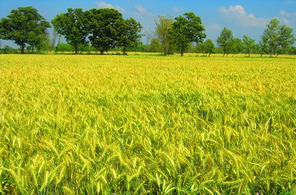

My name is Taimoor Hassan and you can call me by my first name Taimoor. I was born and raised in Mandi Bahauddin,Punjab, Pakistan. Mandi Bahuaddin is famous for its history because Alexander fought a war there.My village is located on bank of river Jhelum. I really liked the sunset of my village, shinning water flowing with speed.

I chose software development because I studied computer science as a major subject in high school. My uncle is working as a software developer in an IT company in Sweden. He encouraged me to choose software development as my career. Technology has become part of our lives. The thing that I like about technology is that things are getting easier day by day. In recent development, the thing I enjoyed most is online shopping. You can buy anything with a few clicks.
. My hobbies are gardening and walking. My father used to teach me a lot about farming and gardening. I grew flowers and fruit plants in my house. I also like walking. Whenever I am free I usually go on walking. It helps me to release stress .
